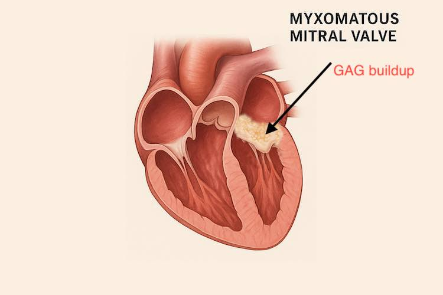

Degenerative Mitral Valve disease explained
❤️ What does it mean for my pet?
Published on: June 30, 2025
Reviewed on: June 30, 2025
Degenerative mitral valve disease, sometimes called myxomatous valve disease, is by far the most common disease to affect dogs. Estimates put the number at about 75% of all cases of cardiac disease are caused by this condition. If your dog develops a heart murmur in adulthood, rather than when a puppy, the very high probability is that it has mitral valve disease. Although it is very important to realise there are many other causes of murmurs and it should be confirmed via a heart scan (echo) – see ‘What is an Echo?’ and ‘Understanding Heart Murmurs in Pets’.
It’s a very important topic, so there are several linked articles to cover it all. Understanding the disease in its different stages and what to do when can be potentially life saving for your pet.
What is the mitral valve?
- The heart has 2 sides and 4 chambers.
- It is the left ventricle, however, that does most of the actual work.
- It pumps the blood all around the body, generating a systolic blood pressure of around 120mmHg with every beat, at something like 120,000 beats per day.
- The mitral valve sits at the entrance to this chamber, between the left atrium and the left ventricle, and is slammed shut every beat preventing the blood from going backwards the wrong way.
- This creates an incredible stress on the valve, and it is amazing how well designed it is and how well the body typically manages to prevent severe damage or deterioration.
So what is DMVD?
In this condition there are genetic factors that cause the valve to develop problems due to this wear and tear over time. Under the microscope it is possible to see breakdown of the strong connective tissues of the valve structure, specifically the fibrous layer in the valve that provides the structure and framework. In addition strange accumulations of things called glycosaminoglycans occur in the valve. These are fascinating sugar based molecules that the body likes to use as shock absorbers, for example in places like joints. They are like a gel that helps fill spaces between cells. However their build up in the valve makes things too weak and floppy.
This process also occurs in the chordae tendineae – which are strands of tissue that hold the valves in place like parachute cords.
The result of all of this is the whole valve becomes weak and floppy. Like an overstretched elastic band, it starts to sag backwards when closing under pressure, and allow leaks of blood.
What effects does this have?
It’s the story of a pump that is dropping in efficiency more and more as time goes on.
- Initially the amount of blood leaking backwards is fairly minimal. The heart is very adaptable and has a lot of reserve capacity, particularly in dogs. So the ventricle just contracts a little bit harder to compensate for the leak. (Stage B1, see below)
- The valve gets a little worse and worse as time goes on, until eventually the ability of the muscle to compensate easily is exhausted
- Now the heart starts to get bigger. This is a common adaptation when the heart is put under strain. However it has the problem here that the valve annulus is being stretched and this worsens the leakage through the valve. (Stage B2)
- So we end up in a vicious cycle of worsening heart enlargement (cardiomegaly) and increased leak through the valve due to stetch.
- Finally this gets so bad that the heart can’t cope well anymore, effectively its pumping action is failing and the pressure builds up behind it. This ‘back pressure’ then eventually causes the symptoms that we see, usually fluid starting to leak out into the air spaces in the lung. Cardiologists call this ‘congestive heart failure’ or CHF for short, and it is potentially life threatening. Also known as Stage C.
What does this mean for my pet?
What this actually means is that there is often an audible murmur and gradual deterioration in heart function for a very long time before any actual symptoms appear. Your vet might have picked up a murmur in a routine check and briefly explained that there could be a problem, but in reality its likely that nothing will be outwardly wrong with your pet at all. This can sometimes lead to a feeling of complacency.
Eventually though there is the danger that CHF develops completely out of the blue and need emergency treatment, which is stressful for all involved and can be difficult to recover from.
How long does all this take?
The other huge difficulty with this disease is that it is frustratingly variable in how rapidly different dogs progress, and we still have little way of predicting things. Some breeds are known to be much more at risk than others, typically Cavalier King Charles Spaniels, Chihuahuas, also Whippets, Dachshunds, and Collies, but it is seen in many dogs. This is all due to genetic factors which still haven’t been well characterised.
The end result is that some dogs progress rapidly through the above process in a matter of about 6 to 12 months, while other dogs can take many years or even never actually progress to a point of serious disease.
The stages of disease
Veterinary cardiologists now use a set of stages to help describe these steps. This is developed from the American College of Veterinary Internal Medicine (ACVIM). It is very useful to examine these in more detail, so please see the article: “The Stages of Degenerative Mitral Valve Disease.”
← Back to Blog